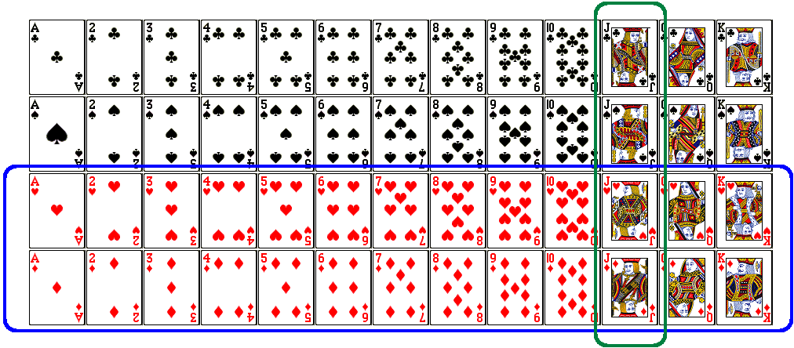
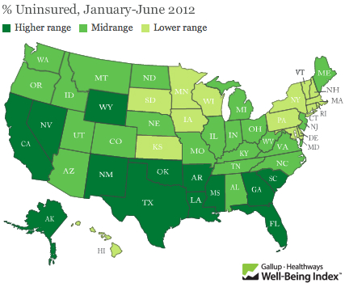
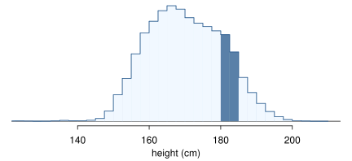
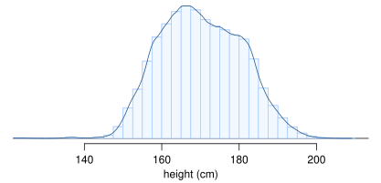

Benjamin Jäger
Slides first developed by Mine Çetinkaya-Rundel. Derivative of OpenIntro slides, shared under a CC BY-SA licence.
There are several possible interpretations of probability but they (almost) completely agree on the mathematical rules probability must follow.
Frequentist interpretation:
Bayesian interpretation:
Which of the following events would you be most surprised by?
Law of large numbers states that as more observations are collected, the proportion of occurrences with a particular outcome, \(\hat{p}_n\), converges to the probability of that outcome, \(p\).
When tossing a fair coin, if heads comes up on each of the first 10 tosses, what do you think the chance is that another head will come up on the next toss? 0.5, less than 0.5, or more than 0.5?
\[\underline{H} \hspace{1mm} \underline{H} \hspace{1mm} \underline{H} \hspace{1mm} \underline{H} \hspace{1mm} \underline{H} \hspace{1mm} \underline{H} \hspace{1mm} \underline{H} \hspace{1mm} \underline{H} \hspace{1mm} \underline{H} \hspace{1mm} \underline{H} \hspace{1mm} \underline{?}\]
Disjoint (mutually exclusive) outcomes: Cannot happen at the same time.
Non-disjoint outcomes: Can happen at the same time.
What is the probability of drawing a jack or a red card from a well shuffled full deck?

\[\begin{align*} P(jack~or~red) &= P(jack) + P(red) - \color{#FF8000}{\text{$P(jack~and~red)$}} \\ &= \frac{4}{52} + \frac{26}{52} - \frac{2}{52} = \frac{28}{52} \end{align*}\]
What is the probability that a randomly sampled student thinks marijuana should be legalized or they agree with their parents’ political views?
| Share Parents’ Politics | |||
| Legalize MJ | No | Yes | Total |
| No | 11 | 40 | 51 |
| Yes | 36 | 78 | 114 |
| Total | 47 | 118 | 165 |
[Participate ⟹ strawpoll.live and use the code 833295]
General addition rule
\[P(A~or~B) = P(A) + P(B) - P(A~and~B)\]
For disjoint events \(P(A~and~B) = 0\), so the above formula simplifies to \(P(A~or~B) = P(A) + P(B)\).
A probability distribution lists all possible events and the probabilities with which they occur.
The probability distribution for the gender of one kid:
| Event | Male | Female |
|---|---|---|
| Probability | 0.5 | 0.5 |
Rules for probability distributions:
The probability distribution for the genders of two kids:
| Event | MM | FF | MF | FM |
|---|---|---|---|---|
| Probability | 0.25 | 0.25 | 0.25 | 0.25 |
Sample space is the collection of all possible outcomes of a trial.
Complementary events are two mutually exclusive events whose probabilities that add up to 1.
Two processes are independent if knowing the outcome of one provides no useful information about the outcome of the other.
Between January 9-12, 2013, SurveyUSA interviewed a random sample of 500 NC residents asking them whether they think widespread gun ownership protects law abiding citizens from crime, or makes society more dangerous. 58% of all respondents said it protects citizens. 67% of White respondents, 28% of Black respondents, and 64% of Hispanic respondents shared this view. Which of the below is true?
Opinion on gun ownership and race ethnicity are most likely
[Participate ⟹ strawpoll.live and use the code 833295]
Checking for independence
If P(A occurs, given that B is true) = \(P(A~|~B) = P(A)\), then A and B are independent.
P(protects citizens) = 0.58
P(randomly selected NC resident says gun ownership protects citizens, given that the resident is white) =
P(protects citizens \(|\) White) = 0.67
P(protects citizens \(|\) Black) = 0.28
P(protects citizens \(|\) Hispanic) = 0.64
P(protects citizens) varies by race/ethnicity, therefore opinion on gun ownership and race ethnicity are most likely dependent.
We saw that P(protects citizens \(|\) White) = 0.67 and P(protects citizens \(|\) Hispanic) = 0.64. Under which condition would you be more convinced of a real difference between the proportions of Whites and Hispanics who think gun widespread gun ownership protects citizens? \(n = 500\) or \(n = 50000\)
\(n = 50000\)
Product rule for independent events
\[P(A~and~B) = P(A) \times P(B)\] Or more generally, \(P(A_1~and~\cdots~and~A_k) = P(A_1) \times \cdots \times P(A_k)\)
You toss a coin twice, what is the probability of getting two tails in a row?
\[P(\text{T on the first toss}) \times P(\text{T on the second toss}) = \frac{1}{2} \times \frac{1}{2} = \frac{1}{4}\]
A recent Gallup poll suggests that 25.5% of Texans do not have health insurance as of June 2012. Assuming that the uninsured rate stayed constant, what is the probability that two randomly selected Texans are both uninsured?

Do the sum of probabilities of two disjoint events always add up to 1?
Not necessarily, there may be more than 2 events in the sample space, e.g. party affiliation.
Do the sum of probabilities of two complementary events always add up to 1?
Yes, that’s the definition of complementary, e.g. heads and tails.
If we were to randomly select 5 Texans, what is the probability that at least one is uninsured?
Since the probability of the sample space must add up to 1:
\[\begin{eqnarray*} Prob(at~least~1~uninsured) &=& 1 - Prob(none~uninsured) \\ &\phantom{=}&\phantom{ 1 - [(1-0.255)^5]} \\ &\phantom{=}&\phantom{ 1- 0.745^5} \\ &\phantom{=}&\phantom{ 1 - 0.23} \\ &\phantom{=}&\phantom{ 0.77} \end{eqnarray*}\]
\[\begin{eqnarray*} Prob(at~least~1~uninsured) &=& 1 - Prob(none~uninsured) \\ &=& 1 - [(1-0.255)^5] \\ &\phantom{=}&\phantom{ 1- 0.745^5} \\ &\phantom{=}&\phantom{ 1 - 0.23} \\ &\phantom{=}&\phantom{ 0.77} \end{eqnarray*}\]
\[\begin{eqnarray*} Prob(at~least~1~uninsured) &=& 1 - Prob(none~uninsured) \\ &=& 1 - [(1-0.255)^5] \\ &=& 1- 0.745^5 \\ &\phantom{=}&\phantom{ 1 - 0.23} \\ &\phantom{=}&\phantom{ 0.77} \end{eqnarray*}\]
\[\begin{eqnarray*} Prob(at~least~1~uninsured) &=& 1 - Prob(none~uninsured) \\ &=& 1 - [(1-0.255)^5] \\ &=& 1- 0.745^5 \\ &=& 1 - 0.23 \\ &\phantom{=}&\phantom{ 0.77} \end{eqnarray*}\]
\[\begin{eqnarray*} Prob(at~least~1~uninsured) &=& 1 - Prob(none~uninsured) \\ &=& 1 - [(1-0.255)^5] \\ &=& 1- 0.745^5 \\ &=& 1 - 0.23 \\ &=& 0.77 \end{eqnarray*}\]
At least 1
\[P(at~least~one) = 1 - P(none)\]
Roughly 20% of undergraduates at a university are vegetarian or vegan. What is the probability that, among a random sample of 3 undergraduates, at least one is vegetarian or vegan?
\(P(at~least~1~from~veg) = 1- P(none~veg)\)
\(= 1 - (1 - 0.2)^3\)
\(= 1 - 0.8^3\)
\(= 1 - 0.512 = 0.488\)
[Participate ⟹ strawpoll.live and use the code 833295]
Researchers randomly assigned 72 chronic users of cocaine into three groups: desipramine (antidepressant), lithium (standard treatment for cocaine) and placebo. Results of the study are summarized below.
| relapse | no relapse | total | |
| desipramine | 10 | 14 | 24 |
| lithium | 18 | 6 | 24 |
| placebo | 20 | 4 | 24 |
| total | 48 | 24 | 72 |
What is the probability that a patient relapsed?
| relapse | no relapse | total | |
| desipramine | 10 | 14 | 24 |
| lithium | 18 | 6 | 24 |
| placebo | 20 | 4 | 24 |
| total | 4848 | 24 | 7272 |
P(relapsed) = \(\frac{48}{72} \approx 0.67\)
What is the probability that a patient received the antidepressant (desipramine) and relapsed?
| relapse | no relapse | total | |
| desipramine | 10 10 | 14 | 24 |
| lithium | 18 | 6 | 24 |
| placebo | 20 | 4 | 24 |
| total | 48 | 24 | 72 72 |
P(relapsed and desipramine) = \(\frac{10}{72} \approx 0.14\)
Conditional probability
The conditional probability of the outcome of interest \(A\) given condition \(B\) is calculated as \[P(A|B) = \frac{P(A~and~B)}{P(B)}\]
| relapse | no relapse | total | |
| desipramine | 10 | 14 | 24 |
| lithium | 18 | 6 | 24 |
| placebo | 20 | 4 | 24 |
| total | 48 | 24 | 72 |
\[\begin{eqnarray*} &&P(relapse | desipramine) \\ &&= \frac{P(relapse ~ and ~ desipramine)}{P(desipramine)} \\ &&= \frac{10 / 72}{24 / 72} = \frac{10}{24} = 0.42\\ \end{eqnarray*}\]
If we know that a patient received the antidepressant (desipramine), what is the probability that they relapsed?
| no | |||
| relapse | relapse | total | |
| desipramine | 10 10 | 14 | 24 24 |
| lithium | 18 | 6 | 24 |
| placebo | 20 | 4 | 24 |
| total | 48 | 24 | 72 |
P(relapse \(|\) desipramine) = \(\frac{10}{24} \approx 0.42\)
P(relapse \(|\) lithium) = \(\frac{18}{24} \approx 0.75\)
P(relapse \(|\) placebo) = \(\frac{20}{24} \approx 0.83\)
If we know that a patient relapsed, what is the probability that they received the antidepressant (desipramine)?
| no | |||
| relapse | relapse | total | |
| desipramine | 10 10 | 14 | 24 |
| lithium | 18 | 6 | 24 |
| placebo | 20 | 4 | 24 |
| total | 48 48 | 24 | 72 |
P(desipramine \(|\) relapse) = \(\frac{10}{48} \approx 0.21\)
P(lithium \(|\) relapse) = \(\frac{18}{48} \approx 0.375\)
P(placebo \(|\) relapse) = \(\frac{20}{48} \approx 0.42\)
Earlier we saw that if two events are independent, their joint probability is simply the product of their probabilities. If the events are not believed to be independent, the joint probability is calculated slightly differently.
If \(A\) and \(B\) represent two outcomes or events, then
\[P(A~and~B) = P(A|B) \times P(B)\]
Note that this formula is simply the conditional probability formula, rearranged.
It is useful to think of \(A\) as the outcome of interest and \(B\) as the condition.
Consider the following (hypothetical) distribution of gender and major of students in an introductory statistics class:
| social | non-social | ||
| science | science | total | |
| female | 30 | 20 | 50 |
| male | 30 | 20 | 50 |
| total | 60 | 40 | 100 |
Generically, if \(P(A|B) = P(A)\) then the events \(A\) and \(B\) are said to be independent.
These percentages are approximate, and very difficult to estimate.
When a patient goes through breast cancer screening there are two competing claims: patient had cancer and patient doesn’t have cancer. If a mammogram yields a positive result, what is the probability that patient actually has cancer?
\[\begin{eqnarray*} &&P(C | +) \\ &&\phantom{= \frac{P(C~and~+)}{P(+)}} \\ &&\phantom{= \frac{0.0133}{0.0133 + 0.0983}} \\ &&\phantom{= 0.12} \end{eqnarray*}\]
\[\begin{eqnarray*} &&P(C | +) \\ &&= \frac{P(C~and~+)}{P(+)} \\ &&\phantom{= \frac{0.0133}{0.0133 + 0.0983}} \\ &&\phantom{= 0.12} \end{eqnarray*}\]
\[\begin{eqnarray*} &&P(C | +) \\ &&= \frac{P(C~and~+)}{P(+)} \\ &&= \frac{0.0133}{0.0133 + 0.0983} \\ &&\phantom{= 0.12} \end{eqnarray*}\]
\[\begin{eqnarray*} &&P(C | +) \\ &&= \frac{P(C~and~+)}{P(+)} \\ &&= \frac{0.0133}{0.0133 + 0.0983} \\ &&= 0.12 \end{eqnarray*}\]
Tree diagrams are useful for inverting probabilities: we are given \(P(+|C)\) and asked for \(P(C|+)\).
Suppose a woman who gets tested once and obtains a positive result wants to get tested again. In the second test, what should we assume to be the probability of this specific woman having cancer?
What is the probability that this woman has cancer if this second mammogram also yielded a positive result?
\[P(C | +) = \frac{P(C~and~+)}{P(+)} = \frac{0.0936}{0.0936+0.088} = 0.52\]
[Participate ⟹ strawpoll.live and use the code 833295]
The conditional probability formula we have seen so far is a special case of the Bayes’ Theorem, which is applicable even when events have more than just two outcomes.
Bayes’ Theorem:
\[P(outcome~A_1~of~variable~1~|~outcome~B~of~variable~2)\] \[= \frac{P(B|A_1)P(A_1)}{P(B|A_1)P(A_1) + P(B|A_2)P(A_2) + \cdots + P(B|A_k)P(A_k)}\]
where \(A_2\), \(\cdots\), \(A_k\) represent all other possible outcomes of variable 1.
A common epidemiological model for the spread of diseases is the SIR model, where the population is partitioned into three groups: Susceptible, Infected, and Recovered. This is a reasonable model for diseases like chickenpox where a single infection usually provides immunity to subsequent infections. Sometimes these diseases can also be difficult to detect.
Imagine a population in the midst of an epidemic where 60% of the population is considered susceptible, 10% is infected, and 30% is recovered. The only test for the disease is accurate 95% of the time for susceptible individuals, 99% for infected individuals, but 65% for recovered individuals. (Note: In this case accurate means returning a negative result for susceptible and recovered individuals and a positive result for infected individuals).
Draw a probability tree to reflect the information given above. If the individual has tested positive, what is the probability that they are actually infected?
\[P(inf | +) = \frac{P(inf~and~+)}{P(+)} = \frac{0.099}{0.03 + 0.099 + 0.105} \approx 0.423\]
When sampling with replacement, you put back what you just drew.
Imagine you have a bag with 5 red, 3 blue and 2 orange chips in it. What is the probability that the first chip you draw is blue?
5 ● , 3 ● , 2 ●
\[Prob(1^{st} \text{ chip } B) = \frac{3}{5 + 3 + 2} = \frac{3}{10} = 0.3\]
Suppose you did indeed pull a blue chip in the first draw. If drawing with replacement, what is the probability for a blue chip in the second draw?
\(1^{st}\) draw: 5 ● , 3 ● , 2 ●
\(2^{nd}\) draw: 5 ● , 3 ● , 2 ●
\[Prob(2^{nd} \text{ chip } B | 1^{st} \text{ chip } B) = \frac{3}{10} = 0.3\]
Suppose you pulled an orange chip in the first draw. If drawing with replacement, what is the probability for a blue chip in the second draw?
\(1^{st}\) draw: 5 ● , 3 ● , 2 ●
\(2^{nd}\) draw: 5 ● , 3 ● , 2 ●
\[Prob(2^{nd} \text{ chip } B | 1^{st} \text{ chip } O) = \frac{3}{10} = 0.3\]
If drawing with replacement, what is the probability of drawing two blue chips in a row?
\(1^{st}\) draw: 5 ● , 3 ● , 2 ●
\(2^{nd}\) draw: 5 ● , 3 ● , 2 ●
\[Prob(1^{st} \text{ chip } B) \cdot Prob(2^{nd} \text{ chip } B | 1^{st} \text{ chip } B) = 0.3^2 = 0.09\]
When drawing without replacement you do not put back what you drew.
Suppose you pulled a blue chip in the first draw. If drawing without replacement, what is the probability for a blue chip in the second draw?
\(1^{st}\) draw: 5 ● , 3 ● , 2 ●
\(2^{nd}\) draw: 5 ● , 2 ● , 2 ●
\[Prob(2^{nd} \text{ chip } B | 1^{st} \text{ chip } B) = \frac{2}{9} = 0.22\]
If drawing without replacement, what is the probability of drawing two blue chips in a row?
\(1^{st}\) draw: 5 ● , 3 ● , 2 ●
\(2^{nd}\) draw: 5 ● , 2 ● , 2 ●
\[Prob(1^{st} \text{ chip } B) \cdot Prob(2^{nd} \text{ chip } B | 1^{st} \text{ chip } B) = 0.3 \times 0.22\]
In most card games cards are dealt without replacement. What is the probability of being dealt an ace and then a 3? Choose the closest answer.
\[P(ace~then~3) = \frac{4}{52} \times \frac{4}{51} \approx 0.0060\]
[Participate ⟹ strawpoll.live and use the code 833295]
A random variable is a numeric quantity whose value depends on the outcome of a random event
There are two types of random variables:
Discrete random variables often take only integer values
Continuous random variables take real (decimal) values
We are often interested in the average outcome of a random variable.
We call this the expected value (mean), and it is a weighted average of the possible outcomes
\[\mu = E(X) = \sum_{i = 1}^k x_i ~ P(X = x_i)\]
In a game of cards you win $1 if you draw a heart, $5 if you draw an ace (including the ace of hearts), $10 if you draw the king of spades and nothing for any other card you draw. Write the probability model for your winnings, and calculate your expected winning.
| Event | \(X\) | \(P(X)\) | \(X ~ P(X)\) |
|---|---|---|---|
| Heart (not ace) | \(1\) | \(\frac{12}{52}\) | \(\frac{12}{52}\) |
| Ace | \(5\) | \(\frac{4}{52}\) | \(\frac{20}{52}\) |
| King of spades | \(10\) | \(\frac{1}{52}\) | \(\frac{10}{52}\) |
| All else | \(0\) | \(\frac{35}{52}\) | \(0\) |
| Total | \(E(X) = \frac{42}{52} \approx 0.81\) |
Below is a visual representation of the probability distribution of winnings from this game:
We are also often interested in the variability in the values of a random variable.
\[\sigma^2 = Var(X) = \sum_{i = 1}^k (x_i - E(X))^2 P(X = x_i)\] \[\sigma = SD(X) = \sqrt{Var(X)}\]
For the previous card game example, how much would you expect the winnings to vary from game to game?
| \(X\) | \(P(X)\) | \(X ~ P(X)\) | \((X - E(X))^2\) | \(P(X) ~ (X - E(X))^2\) |
|---|---|---|---|---|
| 1 | \(\frac{12}{52}\) | \(1 \times \frac{12}{52} = \frac{12}{52}\) | \((1 - 0.81)^2 = 0.0361\) | \(\frac{12}{52} \times 0.0361 = 0.0083\) |
| 5 | \(\frac{4}{52}\) | \(5 \times \frac{4}{52} = \frac{20}{52}\) | \((5 - 0.81)^2 = 17.5561\) | \(\frac{4}{52} \times 17.5561 = 1.3505\) |
| 10 | \(\frac{1}{52}\) | \(10 \times \frac{1}{52} = \frac{10}{52}\) | \((10 - 0.81)^2 = 84.4561\) | \(\frac{1}{52} \times 84.0889 = 1.6242\) |
| 0 | \(\frac{35}{52}\) | \(0 \times \frac{35}{52} = 0\) | \((0 - 0.81)^2 = 0.6561\) | \(\frac{35}{52} \times 0.6561 = 0.4416\) |
| \(E(X) = 0.81\) | \(V(X) = 3.4246\) | |||
| \(SD(X) = \sqrt{3.4246} = 1.85\) |
A linear combination of random variables \(X\) and \(Y\) is given by
\[aX + bY\]
where \(a\) and \(b\) are some fixed numbers.
The average value of a linear combination of random variables is given by
\[E(aX + bY) = a \times E(X) + b \times E(Y)\]
On average you take 10 minutes for each statistics homework problem and 15 minutes for each chemistry homework problem. This week you have 5 statistics and 4 chemistry homework problems assigned. What is the total time you expect to spend on statistics and chemistry homework for the week?
\[\begin{align*} E(S + S + S + S + S + C + C + C + C) &= 5 \times E(S) + 4 \times E(C) \\ &= 5 \times 10 + 4 \times 15 \\ &= 50 + 60 \\ &= 110~min \end{align*}\]
The variability of a linear combination of two independent random variables is calculated as
\[V(aX + bY) = a^2 \times V(X) + b^2 \times V(Y)\]
The standard deviation of the linear combination is the square root of the variance.
If the random variables are not independent, the variance calculation gets a little more complicated and is beyond the scope of this course.
The standard deviation of the time you take for each statistics homework problem is 1.5 minutes, and it is 2 minutes for each chemistry problem. What is the standard deviation of the time you expect to spend on statistics and physics homework for the week if you have 5 statistics and 4 chemistry homework problems assigned? Suppose that the time it takes to complete each problem is independent of another.
\[\begin{align*} &V(S + S + S + S + S + C + C + C + C) \\ &= V(S) + V(S) + V(S) + V(S) + V(S) \\ & + V(C) + V(C) + V(C) + V(C) \\ &= 5 \times V(S) + 4 \times V(C) \\ &= 5 \times 1.5^2 + 4 \times 2^2 \\ &= 27.25 \end{align*}\]
A casino game costs $5 to play. If the first card you draw is red, then you get to draw a second card (without replacement). If the second card is the ace of clubs, you win $500. If not, you don’t win anything, i.e. lose your $5. What is your expected profits/losses from playing this game? Remember: profit/loss = winnings - cost.
| Event | Win | Profit: \(X\) | \(P(X)\) | \(X \times P(X)\) |
|---|---|---|---|---|
| Red, A\(\clubsuit\) | 500 | 500 - 5 = 495 | \(\frac{26}{52} \times \frac{1}{51} = 0.0098\) | \(495 \times 0.0098 = 4.851\) |
| Other | 0 | 0 - 5 = -5 | \(1 - 0.0098 = 0.9902\) | \(-5 \times 0.9902 = -4.951\) |
| \(E(X) = -0.1\) |
[Participate ⟹ strawpoll.live and use the code 833295]
A fair game is defined as a game that costs as much as its expected payout, i.e. expected profit is 0.
Do you think casino games in Vegas cost more or less than their expected payouts?
If those games cost less than their expected payouts, it would mean that the casinos would be losing money on average, and hence they wouldn’t be able to pay for all this:
Image by Moyan_Brenn on Flickr http://www.flickr.com/photos/aigle_dore/5951714693.
Random variables do not work like normal algebraic variables: \[X + X \ne 2X\]
\[\begin{align*} E(X + X) &= E(X) + E(X) \\ &= 2 E(X) \\ &~ \\ E(2X) &= 2 E(X) \\ &~ \end{align*}\]
\[\begin{align*} Var(X + X) &= Var(X) + Var(X) \\ &= 2~Var(X) \\ &~ \\ Var(2X) &= 2^2~Var(X) \\ &= 4~Var(X) \end{align*}\]
\(E(X + X) = E(2X)\), but \(Var(X + X) \ne Var(2X)\).
We assume X + X are independent
A company has 5 Lincoln Town Cars in its fleet. Historical data show that annual maintenance cost for each car is on average $2,154 with a standard deviation of $132. What is the mean and the standard deviation of the total annual maintenance cost for this fleet?
Note that we have 5 cars each with the given annual maintenance cost \((X_1 + X_2 + X_3 + X_4 + X_5)\), not one car that had 5 times the given annual maintenance cost \((5X)\).
\[\begin{eqnarray*} E(X_1 + X_2 + X_3 + X_4 + X_5) &=& E(X_1) + E(X_2) + E(X_3) \\ && + E(X_4) + E(X_5) \\ &=& 5 \times E(X) = 5 \times 2,154 = \$ 10,770 \\ Var(X_1 + X_2 + X_3 + X_4 + X_5) &=& Var(X_1) + Var(X_2) + Var(X_3) \\ && + Var(X_4) + Var(X_5) \\ &=& 5 \times V(X) = 5 \times 132^2 = \$^2 87,120 \\ SD(X_1 + X_2 + X_3 + X_4 + X_5) &=& \sqrt{87,120} = \$ 295.16 \\ \end{eqnarray*}\]

Since height is a continuous numerical variable, its probability density function is a smooth curve.

DSK803 · Chapter 3: Probability